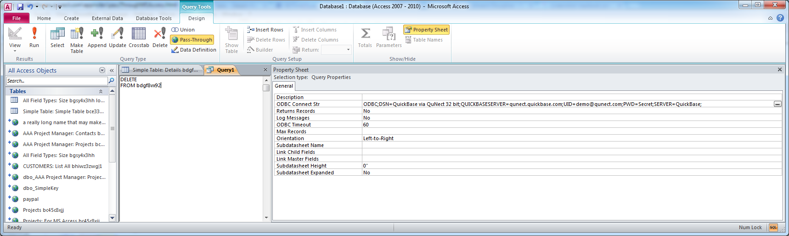

Application Note for QuNect ODBC for QuickBase
Using Pass-Through Queries with QuNect ODBC for QuickBase from MS Access
Deleting QuickBase records in MS Access can run thousands of times faster if you use a Pass-Through query. For example deleting all the records in a table with ten thousand records, can be accomplished in under a second. For instance to delete all the records in a table with a dbid of bdgf8vx92 you would write this SQL statement:
DELETE FROM bdgf8vx92
To delete all the records where a checkbox field called Expired is checked use the following SQL statement:
DELETE FROM bdgf8vx92 WHERE "Expired" = 1
To find more examples of a WHERE clause please read Writing SQL Statements for QuNect ODBC for QuickBase
Please refer to the image below to understand where to enter the SQL statement. You will need to choose a DSN by clicking on the button with the ellipsis to the right of ODBC Connect Str. Since a DELETE statement does not return any records you will want to set Returns Records to No.
